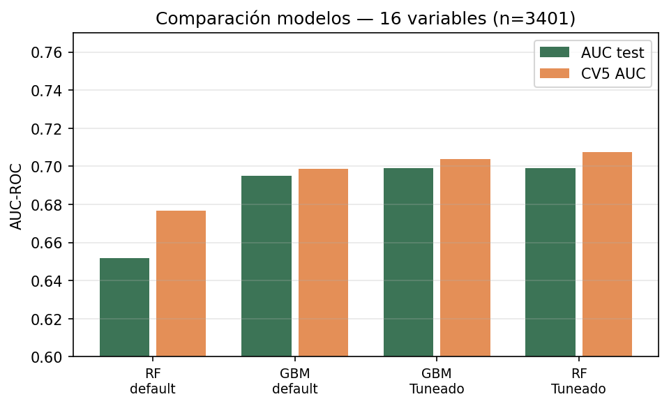
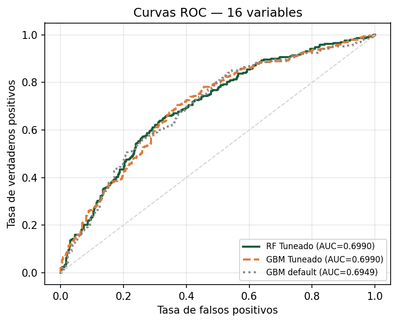
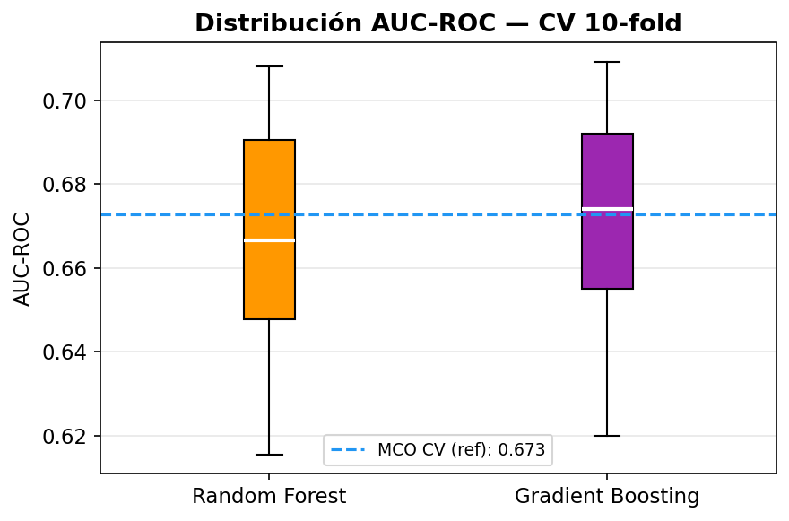
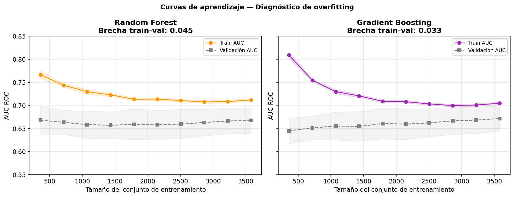
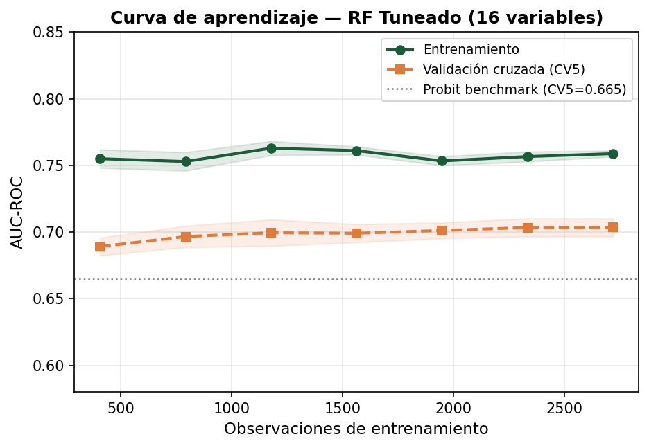
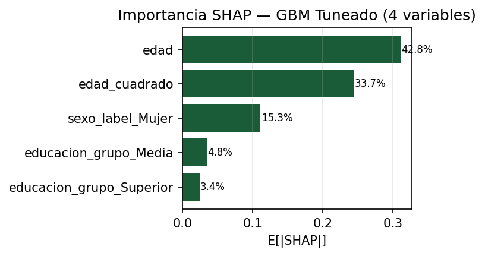
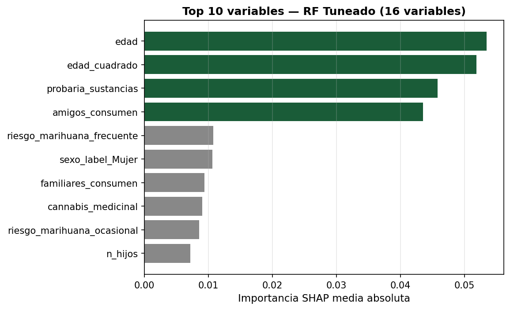
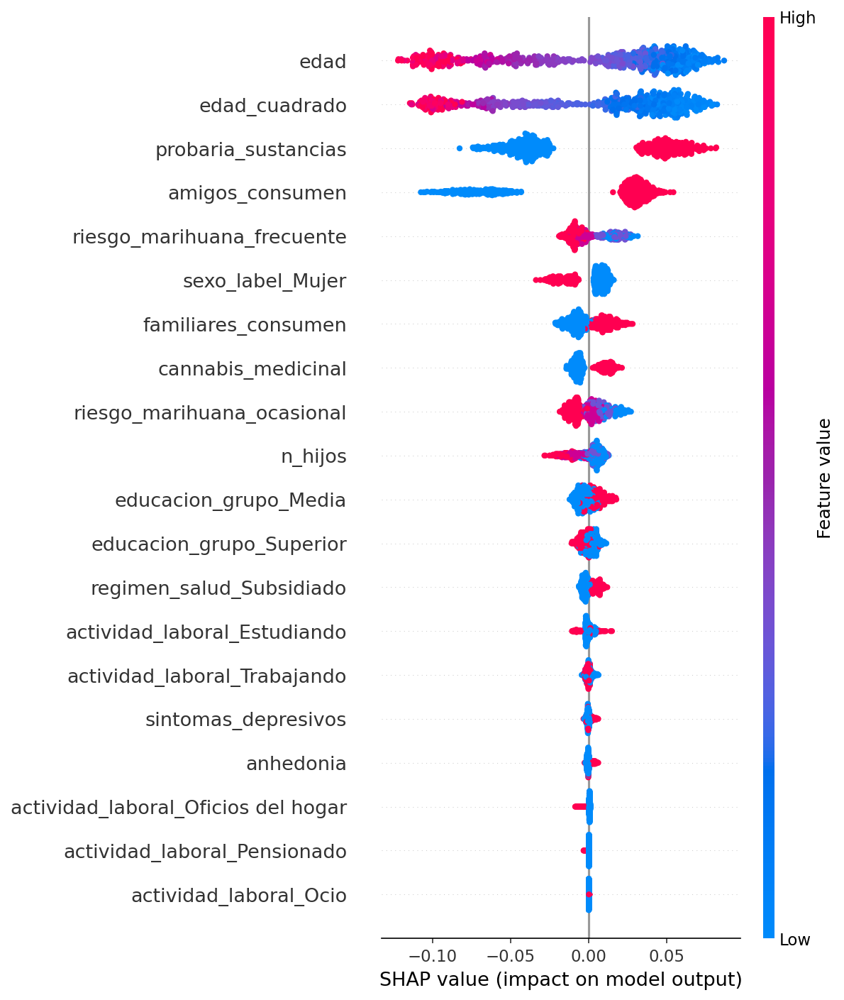
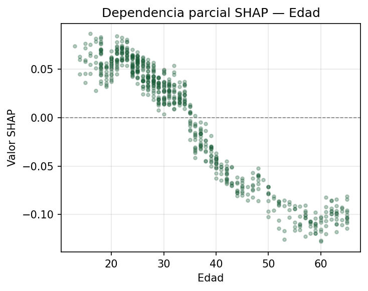

Universidad EAFIT · Profesores: Paula M. Almonacid Hurtado & Carlos A. Cerro Espinal
Construimos un pipeline reproducible que compara un benchmark econométrico (MCO/Probit) con modelos de machine learning (Random Forest, XGBoost y Gradient Boosting Machine) para predecir la probabilidad individual de reportar consumo de marihuana en los últimos doce meses en Colombia. Utilizamos la Encuesta Nacional de Consumo de Sustancias Psicoactivas (ENCSPA), integrando cinco módulos: consumo (cap. K), datos demográficos, educación, red social y actitudes (cap. G), y situación laboral, salud mental y percepción de riesgo (cap. D). El feature set ampliado incluye 16 variables distribuidas en siete grupos teóricos.
Con cuatro variables, el benchmark Probit alcanza AUC-ROC = 0.7027 (CV5 = 0.6648). Ningún modelo ML lo supera con el mismo feature set sin tuning disciplinado. Al ampliar a 16 variables y tunear con regularización explícita, el RF Tuneado obtiene CV5 AUC = 0.703 ± 0.007 — ganancia de +0.038 sobre el benchmark. La brecha train-test se controla en 0.060 (max_depth=15, min_samples_leaf=25) y la curva de aprendizaje descarta memorización. La interpretabilidad SHAP revela que probaria_sustancias (17.1%) y amigos_consumen (16.2%) alcanzan importancia comparable a la edad individual (19.9%), validando la Teoría del Aprendizaje Social. El sexo cae del 3er al 6to lugar al controlar por red social y actitud.
| Modelo | Features | Accuracy | AUC-ROC | F1 | CV AUC (5-fold) |
|---|---|---|---|---|---|
| Benchmark econométrico | |||||
| MCO (LPM) | 4 | 0.6611 | 0.7033 | 0.5823 | — |
| Probit | 4 | 0.6611 | 0.7027 | 0.5817 | 0.6648 |
| ML — especificación base (4 variables) | |||||
| Random Forest | 4 | 0.6397 | 0.6600 | 0.5689 | 0.6316 |
| Gradient Boosting | 4 | 0.6373 | 0.6947 | 0.5511 | 0.6667 |
| GBM Tuneado ↑ TUNING | 4 | 0.6573 | 0.6959 | 0.5891 | 0.6714 |
| ML — modelo ampliado (16 variables, n=3 401) ★ | |||||
| Random Forest | 16 | 0.6397 | 0.6519 | — | 0.677 ± 0.018 |
| Gradient Boosting | 16 | 0.6490 | 0.6949 | — | 0.699 ± 0.019 |
| GBM Tuneado | 16 | 0.6505 | 0.6990 | 0.5795 | 0.704 ± 0.021 |
| RF Tuneado ★ | 16 | 0.6667 | 0.6990 | 0.5880 | 0.703 ± 0.007 ↑ MEJOR |
Hallazgo clave: El RF Tuneado regularizado (16 variables) alcanza CV5 AUC = 0.703 ± 0.007, superando al benchmark Probit en +0.038 y al GBM tuneado de 4 variables en +0.032. La varianza entre pliegues (±0.007) es tres veces menor que la del GBM tuneado 16-var (±0.021). La regularización explícita (max_depth=15, min_samples_leaf=25) redujo la brecha train-test de 0.094 a 0.060; la curva de aprendizaje estable descarta memorización.





Usando SHAP TreeExplainer (Lundberg & Lee, 2017) descomponemos cada predicción como suma de contribuciones exactas por variable: f(xᵢ) = φ₀ + Σⱼ φᵢⱼ. La importancia global E[|φⱼ|] permite ordenar variables independientemente del signo de su efecto.
probaria_sustancias (17.1%) y amigos_consumen (16.2%) alcanzan importancia comparable a la de edad individual (19.9%). El sexo cae al sexto lugar (4.0%). La red social y la actitud co-determinan la propensión tanto como el ciclo de vida. Esto valida empíricamente la Teoría del Aprendizaje Social y el Health Belief Model.


| # | Variable | E[|φⱼ|] | % | Grupo teórico |
|---|---|---|---|---|
| 1 | edad | 0.053 | 19.9% | Demográfica |
| 2 | edad_cuadrado | 0.052 | 19.3% | Demográfica |
| 3 | probaria_sustancias | 0.046 | 17.1% | Actitud ★ |
| 4 | amigos_consumen | 0.044 | 16.2% | Red social ★ |
| 5 | riesgo_marihuana_frecuente | 0.011 | 4.0% | Percepción riesgo ★ |
| 6 | sexo_label_Mujer | 0.011 | 4.0% | Demográfica ↓ |
| 7 | familiares_consumen | 0.009 | 3.5% | Red social ★ |
| 8 | cannabis_medicinal | 0.009 | 3.4% | Actitud ★ |
| 9 | riesgo_marihuana_ocasional | 0.009 | 3.2% | Percepción riesgo ★ |
| 10 | n_hijos | 0.007 | 2.7% | Familia ★ |
★ Variables no disponibles en el modelo de 4 variables. ↓ Variables que caen en relevancia relativa al ampliar el feature set.


La auditoría detectó que consumo_12m difiere de K_03 en 898 casos. Se reentrenó el GBM tuneado con Yalt = 𝟙{K_03=1} para verificar estabilidad estructural.
| Métrica | Y original | Y estricta | Δ |
|---|---|---|---|
| AUC-ROC (test) | 0.7182 | 0.6870 | −0.031 |
| CV AUC-10fold (media) | 0.6685 | 0.6951 | +0.027 |
Conclusión: las relaciones estructurales se mantienen; la discrepancia en la construcción de Y no domina el resultado.
cannabis_tax.cli pipelinen_estimators | 157 |
max_depth | 2 |
learning_rate | 0.0422 |
subsample | 0.972 |
min_samples_leaf | 26 |
max_features | log2 |
Patrón: árboles poco profundos + regularización fuerte → menor varianza.
El uso de modelos predictivos sobre comportamientos sensibles impone obligaciones éticas explícitas. Este trabajo adopta los principios de la Responsible AI aplicados al contexto de política de drogas.